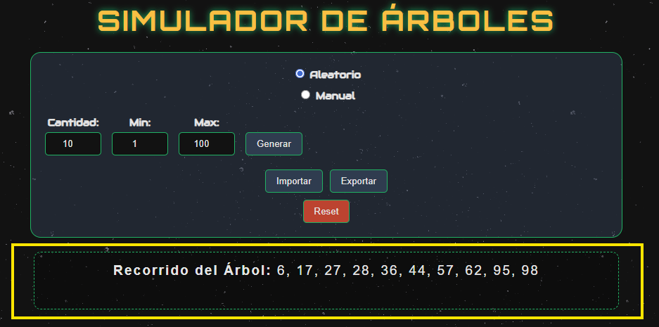

1. ¿Qué es el Simulador de Árboles?
TreeSimulator es una herramienta visual para aprender cómo funcionan los árboles binarios. Permite construir, visualizar y analizar árboles de dos maneras principales:
- Modo Simulador: Para crear un Árbol Binario de Búsqueda (BST) paso a paso y ver cómo funcionan los recorridos.
- Modo Reconstructor: Para resolver el desafío de armar un árbol binario si solo conoces sus secuencias de recorrido (ej. In-Order y Pre-Order).
Puedes cambiar entre estos dos modos usando el interruptor (Modo Simulador / Modo Reconstructor) en la parte superior del panel de control.
2. Modo Simulador (Crear y Analizar)
Este es el modo por defecto. Te permite crear un Árbol Binario de Búsqueda (BST), donde los nodos menores van a la izquierda y los mayores a la derecha.
Paso 1: Crear un Árbol
Tienes dos formas de crear un árbol, seleccionables en el panel de control:
- Modo "Aleatorio":
- Ingresa la Cantidad de Nodos que deseas.
- Define el Rango de Valores (mínimo y máximo) para los nodos.
- Presiona el botón "Generar". Un árbol se dibujará automáticamente en el visor.
- Modo "Manual":
- Presiona el botón "Insertar".
- Se abrirá una ventana para que escribas el valor del nodo que quieres añadir.
- El nodo se insertará en el árbol respetando las reglas de un BST (Árbol de Búsqueda Binaria).
Paso 2: Analizar con Recorridos
Una vez que tienes un árbol en pantalla, puedes ejecutar animaciones de recorridos usando los botones principales:
- IN-ORDER: (Izquierda, Raíz, Derecha) - Visita el sub-árbol izquierdo, luego el nodo actual, y al final el sub-árbol derecho.
- POST-ORDER: (Izquierda, Derecha, Raíz) - Visita el sub-árbol izquierdo, luego el sub-árbol derecho, y al final el nodo actual.
- PRE-ORDER: (Raíz, Izquierda, Derecha) - Visita el nodo actual primero, luego el sub-árbol izquierdo, y al final el sub-árbol derecho.
Paso 3: Ver los Resultados
- Visor de Árbol: Es el área central. Verás cómo los nodos se iluminan en verde en el orden exacto del recorrido seleccionado.
- Barra de Resultado: En la parte inferior de la pantalla, verás la secuencia de números (ej:
10, 29, 45...) que se va formando en tiempo real durante la animación.

Paso 4: Herramientas Adicionales
En la parte inferior del panel de control encontrarás:
- Importar: Carga un árbol que hayas guardado previamente en un archivo
.json.
- Exportar: Guarda la estructura de tu árbol actual en un archivo
.json para usarlo más tarde.
- Reset: Borra el árbol actual y limpia el visor.
3. Modo Reconstructor (Armar desde Secuencias)
Este modo te permite hacer lo opuesto: en lugar de crear un árbol para obtener recorridos, usas los recorridos para crear un árbol.
Objetivo: Este modo es perfecto para practicar y verificar soluciones a problemas comunes de estructuras de datos, donde te dan dos secuencias y te piden dibujar el árbol resultante.
Cómo Usarlo
- Activa el "Modo Reconstructor" con el interruptor. El panel de control cambiará.
- Selecciona el Método: Elige qué par de secuencias tienes (ej: "In-Order + Post-Order").
- Ingresa las Secuencias: Pega tus secuencias de números en las dos cajas de texto. Los números deben estar separados por comas o espacios (ej:
10, 20, 30 o 10 20 30).
- Presiona el botón "Reconstruir".
Si las secuencias son válidas, el árbol binario correspondiente se dibujará en el visor.
Pares de Reconstrucción Soportados
| Par de Secuencias |
Cuándo usarlo |
| IN-ORDER + POST-ORDER |
El par más común. Permite una reconstrucción única. |
| IN-ORDER + PRE-ORDER |
Igualmente común. También permite una reconstrucción única. |
| PRE-ORDER + POST-ORDER |
Solo funciona si el árbol es un "Árbol Binario Completo". |
4. Mensajes y Errores Comunes
Si algo sale mal, el simulador te mostrará una notificación. Esto es lo que significan:
"Los arreglos ... deben existir y tener la misma longitud."
Significado: Las dos secuencias que ingresaste en el Modo Reconstructor no tienen la misma cantidad de números. Asegúrate de que ambas listas tengan exactamente el mismo número de elementos.
"El valor [X] de Post-Order no se encontró en In-Order."
Significado: Los números en las dos secuencias no coinciden. Ambas listas deben contener exactamente los mismos números (ej. si una tiene un '5', la otra también debe tener un '5').
"Error al leer el archivo. Verifique el formato."
Significado: El archivo .json que intentaste importar está dañado o no tiene el formato correcto que el simulador espera.